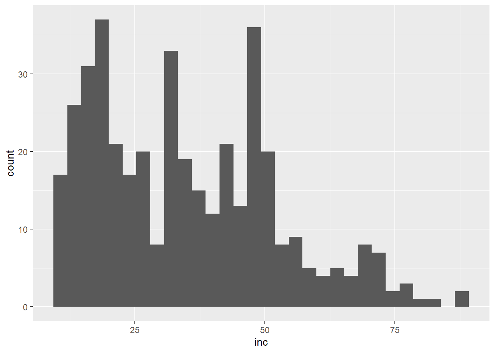
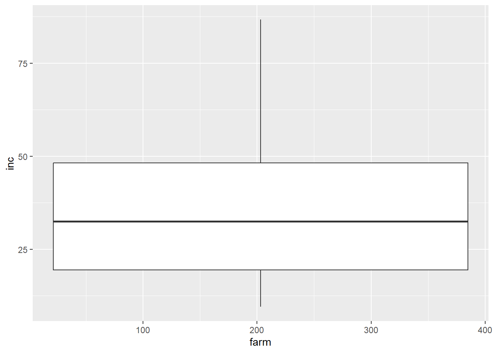

library(patchwork)
library(readxl)
library(tidyverse)Aula_03.qmd
Aula 03 - 20/03/2024
Pacotes
Histograma e importação de arquivos .csv da internet
Um histograma é uma espécie de gráfico de barras que demonstra uma distribuição de frequências. No histograma, a base de cada uma das barras representa uma classe e a altura representa a quantidade ou frequência absoluta com que o valor de cada classe ocorre.
Carregando planilhas da nuvem em formato .csv
Para a criação desse gráfico, é importante que se tenha uma fonte confiável de dados, e que estes sejam de fácil acesso. Uma forma de importar esses dados é através de uma planilha no formato “.csv” da nuvem, o que nos permite acessar de qualquer lugar.
#Para remover as mensagens de erro, adicionar no cabeçalho as mensagens a seguir.
#warning : false
#message : false
cr <- read_csv("https://raw.githubusercontent.com/emdelponte/paper-coffee-rust-Ethiopia/master/data/survey_clean.csv")
cr# A tibble: 405 × 13
farm region zone district lon lat altitude cultivar shade
<dbl> <chr> <chr> <chr> <dbl> <dbl> <dbl> <chr> <chr>
1 1 SNNPR Bench Maji Debub Bench 35.4 6.90 1100 Local Sun
2 2 SNNPR Bench Maji Debub Bench 35.4 6.90 1342 Mixture Mid shade
3 3 SNNPR Bench Maji Debub Bench 35.4 6.90 1434 Mixture Mid shade
4 4 SNNPR Bench Maji Debub Bench 35.4 6.90 1100 Local Sun
5 5 SNNPR Bench Maji Debub Bench 35.4 6.90 1400 Local Sun
6 6 SNNPR Bench Maji Debub Bench 35.4 6.90 1342 Mixture Mid shade
7 7 SNNPR Bench Maji Debub Bench 35.4 6.90 1432 Mixture Mid shade
8 8 SNNPR Bench Maji Debub Bench 35.4 6.90 1100 Local Sun
9 9 SNNPR Bench Maji Debub Bench 35.4 6.89 1400 Local Sun
10 10 SNNPR Bench Maji Debub Bench 35.4 6.88 1342 Mixture Mid shade
# ℹ 395 more rows
# ℹ 4 more variables: cropping_system <chr>, farm_management <chr>, inc <dbl>,
# sev2 <dbl>#para carregar arquivos csv, devo carregar o pacote tidyverse e depois o comando read_csv
glimpse(cr)Rows: 405
Columns: 13
$ farm <dbl> 1, 2, 3, 4, 5, 6, 7, 8, 9, 10, 11, 12, 13, 14, 15, 16,…
$ region <chr> "SNNPR", "SNNPR", "SNNPR", "SNNPR", "SNNPR", "SNNPR", …
$ zone <chr> "Bench Maji", "Bench Maji", "Bench Maji", "Bench Maji"…
$ district <chr> "Debub Bench", "Debub Bench", "Debub Bench", "Debub Be…
$ lon <dbl> 35.44250, 35.44250, 35.42861, 35.42861, 35.42861, 35.3…
$ lat <dbl> 6.904722, 6.904722, 6.904444, 6.904444, 6.904444, 6.90…
$ altitude <dbl> 1100, 1342, 1434, 1100, 1400, 1342, 1432, 1100, 1400, …
$ cultivar <chr> "Local", "Mixture", "Mixture", "Local", "Local", "Mixt…
$ shade <chr> "Sun", "Mid shade", "Mid shade", "Sun", "Sun", "Mid sh…
$ cropping_system <chr> "Plantation", "Plantation", "Plantation", "Plantation"…
$ farm_management <chr> "Unmanaged", "Minimal", "Minimal", "Unmanaged", "Unman…
$ inc <dbl> 86.70805, 51.34354, 43.20000, 76.70805, 47.15808, 51.3…
$ sev2 <dbl> 55.57986, 17.90349, 8.25120, 46.10154, 12.25167, 19.91…#para explorar melhor os dados
#como visualizar a disposiição da incidência nas fazendas? qual artifício do R usar?
#histograma: pega uma variável contínua e coloca em categorias.
cr |>
ggplot(aes(x = inc))+
geom_histogram()
Sumarizar
O comando summary() permite organizar os valores, observando desta forma os valores de média, mediana, dentre outros. Quando uma variável é quantitativa (numeric), o comando summary() retorna algumas estatísticas sobre o vetor de dados.
cr |>
ggplot(aes(x = inc))+
geom_histogram()
#usar o summary para observar os valores sobre a incidência, observar média, mínima, máxima, etc...
summary(cr$inc) Min. 1st Qu. Median Mean 3rd Qu. Max.
9.50 19.43 32.50 34.89 48.20 86.71 Criando Box plot
O “Box plot” é uma ferramenta gráfica utilizada para representar e ilustrar um conjunto de dados distribuídos em cinco diferentes medidas, que possiblitam diversos tipos de observações em uma única análise.
cr |>
ggplot(aes(x = farm, y = inc))+
geom_boxplot()
O box plot permite selecionar apenas as variáveis desejadas para compor o gráfico, como exemplo, separaremos as duas regiões.
cr |>
ggplot(aes(x = inc))+
geom_boxplot()+
facet_wrap(~region)
#comando usado para separar por regiões.
summary(cr$inc) Min. 1st Qu. Median Mean 3rd Qu. Max.
9.50 19.43 32.50 34.89 48.20 86.71 Para resumir os dados e mostrar algumas medidas, utilizaremos o comando “summary()”.
#comando usado para sumarizar por região, separando por incidência média.
cr |> group_by(region) |>
summarize(inc_mean = mean(inc))# A tibble: 2 × 2
region inc_mean
<chr> <dbl>
1 Oromia 37.0
2 SNNPR 33.4Também é possível calcular as médias e medianas de cada conjunto selecionado (região), como feito a seguir:
cr |> group_by(region) |>
summarize(inc_mean = median(inc), sd_mean = sd(inc))# A tibble: 2 × 3
region inc_mean sd_mean
<chr> <dbl> <dbl>
1 Oromia 39.5 14.6
2 SNNPR 29.6 18.9Da mesma forma, para outro conjunto (cultivar):
cr |> group_by(cultivar) |>
summarise(inc_mean = median(inc),
sd_mean = sd(inc))# A tibble: 3 × 3
cultivar inc_mean sd_mean
<chr> <dbl> <dbl>
1 Improved 15.2 5.66
2 Local 50.9 14.3
3 Mixture 31.6 11.2 cr |>
group_by(cultivar, region) |>
summarise(inc_med = median(inc),
inc_mean = mean(inc),
sd_mean = sd(inc))# A tibble: 6 × 5
# Groups: cultivar [3]
cultivar region inc_med inc_mean sd_mean
<chr> <chr> <dbl> <dbl> <dbl>
1 Improved Oromia 15.7 17.4 6.76
2 Improved SNNPR 14.8 16.1 5.19
3 Local Oromia 49.6 52.0 8.08
4 Local SNNPR 54.8 54.5 17.6
5 Mixture Oromia 34.4 33.8 10.4
6 Mixture SNNPR 30.2 30.3 11.6 Relação entre incidência e severidade
#relação entre incidência e severidade,
#Incidência ou severidade? será que existe correlação?
#primeiro argumato = eixo X, segundo argumento = eixo Y.
#Trabalhar com a severidade por ser mais importante, mais informativo.
cr |>
ggplot(aes(inc, sev2, color = region))+
geom_point()summary(cr) farm region zone district
Min. : 1 Length:405 Length:405 Length:405
1st Qu.:102 Class :character Class :character Class :character
Median :203 Mode :character Mode :character Mode :character
Mean :203
3rd Qu.:304
Max. :405
lon lat altitude cultivar
Min. :35.19 Min. :6.120 Min. : 989 Length:405
1st Qu.:35.53 1st Qu.:6.860 1st Qu.:1368 Class :character
Median :36.10 Median :7.279 Median :1632 Mode :character
Mean :36.81 Mean :7.442 Mean :1562
3rd Qu.:38.36 3rd Qu.:7.847 3rd Qu.:1756
Max. :40.20 Max. :9.503 Max. :1987
shade cropping_system farm_management inc
Length:405 Length:405 Length:405 Min. : 9.50
Class :character Class :character Class :character 1st Qu.:19.43
Mode :character Mode :character Mode :character Median :32.50
Mean :34.89
3rd Qu.:48.20
Max. :86.71
sev2
Min. : 0.2248
1st Qu.: 2.6892
Median : 5.9490
Mean : 9.0945
3rd Qu.:12.1593
Max. :55.5799 Histograma por região
cr |>
ggplot(aes(x = inc))+
geom_histogram()+
facet_wrap(~region)
cr |>
ggplot(aes(x = sev2, fill = region))+
geom_histogram()+
facet_grid(region~cultivar)Adicionando escala de cores
library(ggthemes)
cr |>
ggplot(aes(x = sev2, fill = region))+
geom_histogram()+
facet_grid(region~cultivar)+
scale_fill_colorblind()
Adicionar escala de cores manualmente
cr |>
ggplot(aes(x = sev2, fill = region))+
geom_histogram()+
facet_grid(region~cultivar)+
scale_fill_manual(values = c("red","blue"))Mudar posição da legenda
A legenda de uma figura ou gráfico deve estar sempre bem localizada.
cr |>
ggplot(aes(x = sev2, fill = region))+
geom_histogram()+
facet_grid(region~cultivar)+
scale_fill_manual(values = c("red","blue"))+
theme(legend.position = "bottom")Alterando posição dos descritores da legenda
cr |>
ggplot(aes(x = sev2, fill = region))+
geom_histogram()+
facet_grid(region~cultivar)+
theme_minimal()+
theme(legend.position = "bottom")+
scale_fill_manual(values = c("red","blue"))+
labs(y = "Frequency",
x = "Severity (%)", fill = "Region")Tamanho da fonte (base_size)
cr |>
ggplot(aes(x = sev2, fill = region))+
geom_histogram()+
facet_grid(region~cultivar)+
theme_minimal(base_size = 14)+
theme(legend.position = "bottom")+
scale_fill_manual(values = c("red","blue"))+
labs(y = "Frequency",
x = "Severity (%)", fill = "Region")
Salvando a imagem
cr |>
ggplot(aes(x = sev2, fill = region))+
geom_histogram()+
facet_grid(region~cultivar)+
theme_minimal(base_size = 14)+
theme(legend.position = "bottom")+
scale_fill_manual(values = c("red","blue"))+
labs(y = "Frequency",
x = "Severity (%)", fill = "Region")ggsave("Histograma.png")Mudando o número de colunas
cr |>
ggplot(aes(x = sev2, fill = region))+
geom_histogram(color = "white")+
facet_wrap(region~cultivar, ncol = 6)+
theme_minimal(base_size = 14)+
theme(legend.position = "bottom")+
scale_fill_manual(values = c("red","blue"))+
labs(y = "Frequency",
x = "Severity (%)", fill = "Region")
# ggsave("Imagens/Histograma03.png")Criando subconjuntos
#criar um subconjunto através da seleção de variáveis
cr |>
select(farm, region, sev2)# A tibble: 405 × 3
farm region sev2
<dbl> <chr> <dbl>
1 1 SNNPR 55.6
2 2 SNNPR 17.9
3 3 SNNPR 8.25
4 4 SNNPR 46.1
5 5 SNNPR 12.3
6 6 SNNPR 19.9
7 7 SNNPR 11.9
8 8 SNNPR 55.6
9 9 SNNPR 11.6
10 10 SNNPR 11.4
# ℹ 395 more rows#restingindo o banco de cados à informação desejada.
cr2 <- cr |>
select(farm, region, sev2) |>
filter (region == "Oromia")
cr2# A tibble: 165 × 3
farm region sev2
<dbl> <chr> <dbl>
1 286 Oromia 7.63
2 287 Oromia 9.39
3 288 Oromia 1.30
4 289 Oromia 9.79
5 290 Oromia 18.5
6 291 Oromia 13.2
7 292 Oromia 5.60
8 293 Oromia 1.06
9 294 Oromia 17.6
10 295 Oromia 15.4
# ℹ 155 more rowsUtiliza as funções ’select()” e “filter()” do pacote dplyr para selecionar colunas e linhas, respectivamente.
#Utiliza as funções 'select()" e "filter()" dp pacote **dplyr** para selecionar colunas e linhas, respectivamente.
# Filtra "Oromia"
cr_oromia <- cr |>
select(farm, region, cultivar, sev2) |>
filter (region == "Oromia")
# Filtra "SNNPR"
cr_pr <- cr |>
select(farm, region, cultivar, sev2) |>
filter (region == "SNNPR")
cr_pr; cr_oromia# A tibble: 240 × 4
farm region cultivar sev2
<dbl> <chr> <chr> <dbl>
1 1 SNNPR Local 55.6
2 2 SNNPR Mixture 17.9
3 3 SNNPR Mixture 8.25
4 4 SNNPR Local 46.1
5 5 SNNPR Local 12.3
6 6 SNNPR Mixture 19.9
7 7 SNNPR Mixture 11.9
8 8 SNNPR Local 55.6
9 9 SNNPR Local 11.6
10 10 SNNPR Mixture 11.4
# ℹ 230 more rows# A tibble: 165 × 4
farm region cultivar sev2
<dbl> <chr> <chr> <dbl>
1 286 Oromia Mixture 7.63
2 287 Oromia Mixture 9.39
3 288 Oromia Mixture 1.30
4 289 Oromia Mixture 9.79
5 290 Oromia Local 18.5
6 291 Oromia Mixture 13.2
7 292 Oromia Mixture 5.60
8 293 Oromia Mixture 1.06
9 294 Oromia Local 17.6
10 295 Oromia Mixture 15.4
# ℹ 155 more rowsCriando gráficos
VIzualiar os subconjuntos e criando gráficos a partir do ggplot para cada subconjunto.
p1 <- cr_oromia |>
ggplot(aes(x = cultivar, y = sev2 ))+
geom_boxplot()+
labs(title = "Oromia",
y= "Severity (%)", x = "Cultivar")
p1p2 <- cr_pr |>
ggplot(aes(x = cultivar, y = sev2 ))+
geom_boxplot()+
labs(title = "SNNPR", y= "Severity (%)", x = "Cultivar")
p2Criando um gráfico ao lado do outro.
library(patchwork)
p1 <- cr_oromia |>
ggplot(aes(x = cultivar, y = sev2, fill = cultivar ))+
geom_boxplot()+
scale_fill_few()+
theme_few()+
theme(legend.title = element_blank())+
labs( y= "Severity (%)", x = "")+
coord_flip()
p1p2 <- cr_pr |>
ggplot(aes(x = cultivar, y = sev2, fill = cultivar ))+
geom_boxplot()+
scale_fill_few()+
theme_few()+
theme(legend.title = element_blank())+
labs(y= "Severity (%)", x = "")+
coord_flip()
p2 #Para juntar os dois gráficos
p1/p2p1 / (p2 + p1)Colocar só uma legenda
help("patchwork")
(p1 | p2) +
plot_layout(guides = 'collect')+
plot_annotation(tag_levels = 'A')
#para remover o "Oromia" e "SNNPR" do título, basta remover o comando na atribuição anterior.p1 / p2
(p1 / p2) +
plot_layout(guides = 'collect',
axes = 'collect')+
plot_annotation(tag_levels = 'A',
title = "Coffe rust in Ethiopia", caption = "Source: Del Ponte (2022.")
# ggsave("Imagens/Patch2.png", width = 5, height = 4)p3 <- cr_oromia |>
ggplot(aes(x = sev2))+
geom_histogram()+
theme_minimal()
p1 + inset_element(p3, left = 0.6, bottom = 0.6, right = 1, top = 1)# ggsave("Imagens/plot2.png")
p4 <- p1 + inset_element(p3, left = 0.6, bottom = 0.6, right = 1, top = 1)